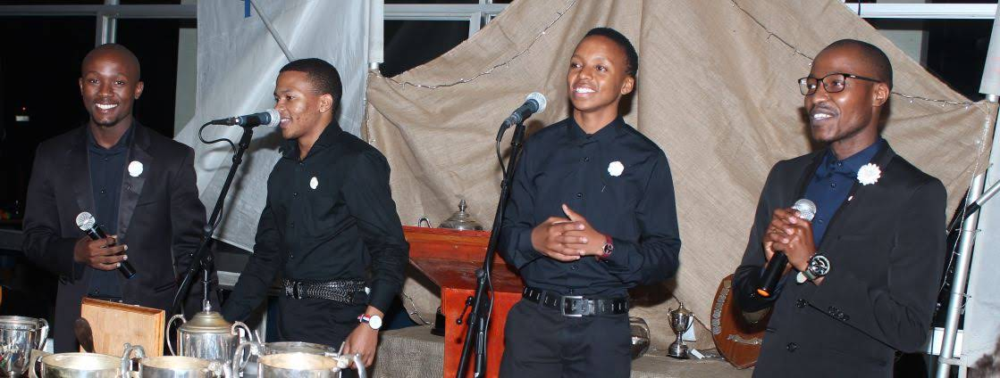
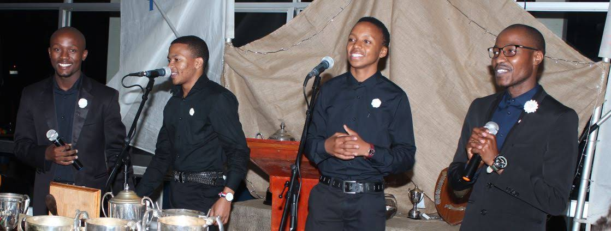

The Sky Classics: Our Event Highlights
Each and every event we have performed at has been the highlight of our lives. Thank you for sharing your best days with us.


 


Certainly! Below is a professional and well-rounded article for **events.html** based on the information you’ve provided about *The Sky Classics*. ## The Sky Classics: A Journey of Music, Passion, and Achievements **The Sky Classics** is a musical group that has garnered a reputation for excellence, passion, and artistry. From winning local talent shows to performing on international stages, their journey has been marked by impressive milestones that showcase their dedication to the craft and their love for music. In this article, we take a closer look at the key events and achievements that have defined *The Sky Classics* and solidified their place in the hearts of music lovers. Absolutely! Here’s the revised section with the inclusion of *The Sky Classics* being founded in 2009: ### The Beginning: A Talent for the Ages *The Sky Classics* was founded in **2009**, emerging from a shared vision of bringing together musicians with a deep passion for classical music and a commitment to creating something unique. The group’s early days were marked by intense practice sessions, refining their vocal abilities, and developing a sound that would set them apart from other musical acts. Founded by a group of like-minded musicians with diverse musical backgrounds, *The Sky Classics* sought to blend the elegance and sophistication of classical music with contemporary styles, creating a fresh and distinctive musical experience. Their impeccable vocal range, harmonies, and stage presence quickly garnered attention, and they soon began performing at local events and festivals, captivating audiences with their versatility and passion for music. Their dedication to their craft and their ability to adapt to various musical genres laid the foundation for the group’s rise in the music industry. Over the years, *The Sky Classics* has proven that hard work, perseverance, and a true love for music can propel an act to great heights. Their journey, which began in 2009, is a testament to their unwavering commitment to excellence. ### A Milestone Victory: Zululand’s Got Talent 2019 One of the most significant moments in *The Sky Classics'* musical journey came in 2019 when they participated in **Zululand's Got Talent**, an annual festival held as part of the prestigious **Dolosfees**. This event attracts some of the best local talent from across the region, and for *The Sky Classics*, it was a stage that would mark the beginning of something even bigger. The group’s performance at the festival was nothing short of extraordinary. With their impeccable vocal harmony, powerful stage presence, and versatility, they captivated the audience and impressed the judges. As a result of their remarkable performance, *The Sky Classics* were crowned the **winners of Zululand’s Got Talent 2019**. This victory not only validated their musical talents but also opened doors for greater opportunities in the entertainment industry. The exposure they gained through the festival helped them build a larger fan base and set the stage for their future success. ### International Recognition: Performing in Eswatini Following their success at Zululand’s Got Talent, *The Sky Classics* continued to gain recognition both locally and internationally. In 2018, the group received an invitation to perform at the **Mpumalanga Spirit of Praise** event in **Eswatini**, a prestigious gathering that brings together some of the best gospel artists and performers from across Africa. The invitation came from none other than gospel legend **Sipho Makhabane**, a towering figure in the South African and African gospel music scene. Being asked to perform at this renowned event was an immense honor for *The Sky Classics*. The group delivered a memorable performance that showcased their versatility, blending elements of classical and gospel music with their unique vocal style. Their participation in the event earned them international acclaim and provided them with the opportunity to engage with a new audience and expand their reach beyond the borders of South Africa. ### Spotlight at University of Zululand: The Stars of Got Talent In addition to their triumphs at major music festivals and international events, *The Sky Classics* also became household names in their local community. As stars of the **University of Zululand Got Talent** competition, the group solidified their reputation as one of the most sought-after musical acts in the region. Their involvement in the event allowed them to showcase their talent to students and faculty, garnering a strong following among university-goers. Through their participation, *The Sky Classics* helped elevate the profile of the competition, bringing a professional touch and an unmatched level of performance to the stage. Their contribution to the event not only demonstrated their musical prowess but also their commitment to supporting local talent and uplifting the arts within the university and the surrounding community. ### Weddings, Funerals, Graduation Parties, and Award Ceremonies While *The Sky Classics* has achieved significant recognition through competitions and festivals, their versatility as performers has made them the go-to choice for a variety of events. Over the years, they have been a part of countless weddings, funerals, graduation parties, and award ceremonies. Each event presents a unique challenge, but *The Sky Classics* is known for their ability to adapt and deliver performances that are both heartfelt and memorable. At weddings, the group brings an air of elegance and beauty to the ceremony, performing love songs that touch the hearts of all who attend. Their performances at funerals provide comfort and solace, offering a sense of peace to grieving families through their soulful renditions. Whether celebrating a milestone at a graduation or honoring outstanding achievements at an award ceremony, *The Sky Classics* delivers performances that resonate deeply with audiences, adding a layer of significance to the event. ### The 1st Annual UMOBA Arts Festival 2022 In 2022, *The Sky Classics* took another monumental step in their journey by becoming part of the **1st Annual UMOBA Arts Festival**. This festival, which celebrates the richness of African arts, culture, and music, provided a platform for *The Sky Classics* to showcase their talents to a wider audience. Their performance at the festival was a testament to their growth as artists and their commitment to preserving the cultural heritage of African music through classical and contemporary styles. The festival allowed the group to perform alongside other renowned artists and groups, further solidifying their position as rising stars in the music world. Their participation in the UMOBA Arts Festival not only enriched their musical journey but also helped them connect with like-minded artists and cultural enthusiasts. ### Achievements and Impact on the Music Scene Throughout their career, *The Sky Classics* has been instrumental in redefining the music scene in South Africa and beyond. Their innovative fusion of classical music with various genres has earned them a place in the hearts of many fans. From their early days as unknown musicians to their current status as one of the most influential musical acts in the region, *The Sky Classics* has achieved what many artists only dream of. Their performances, whether on stage at large festivals or in more intimate settings like weddings and funerals, are always marked by the same level of dedication, passion, and excellence. With a growing fanbase, a track record of outstanding performances, and a relentless drive to push the boundaries of their craft, *The Sky Classics* is poised for even greater success in the years to come. ### Looking Ahead As *The Sky Classics* continues to build on their incredible achievements, the future looks bright for the group. With plans for new music releases, more performances at prestigious events, and the potential to expand their reach even further, *The Sky Classics* is undoubtedly a name that will remain synonymous with excellence in the music industry. Their journey is far from over, and we can’t wait to see where their music takes them next. ---